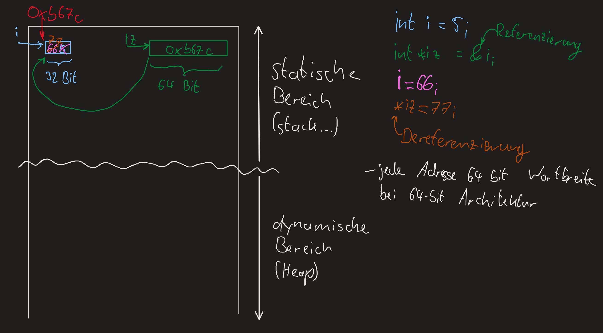
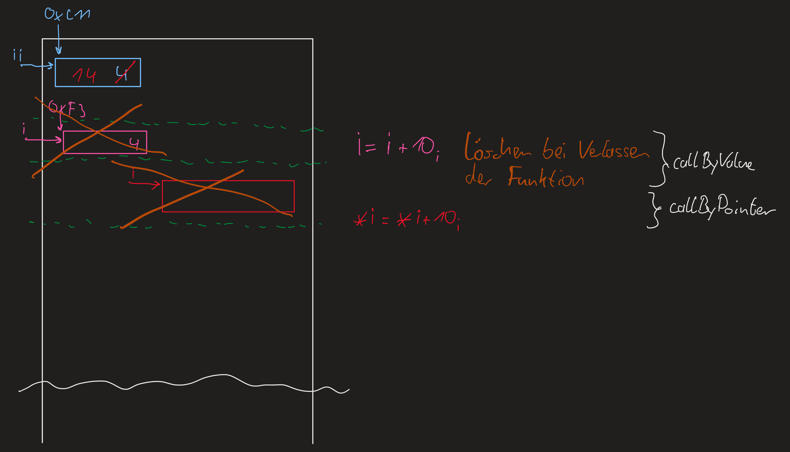
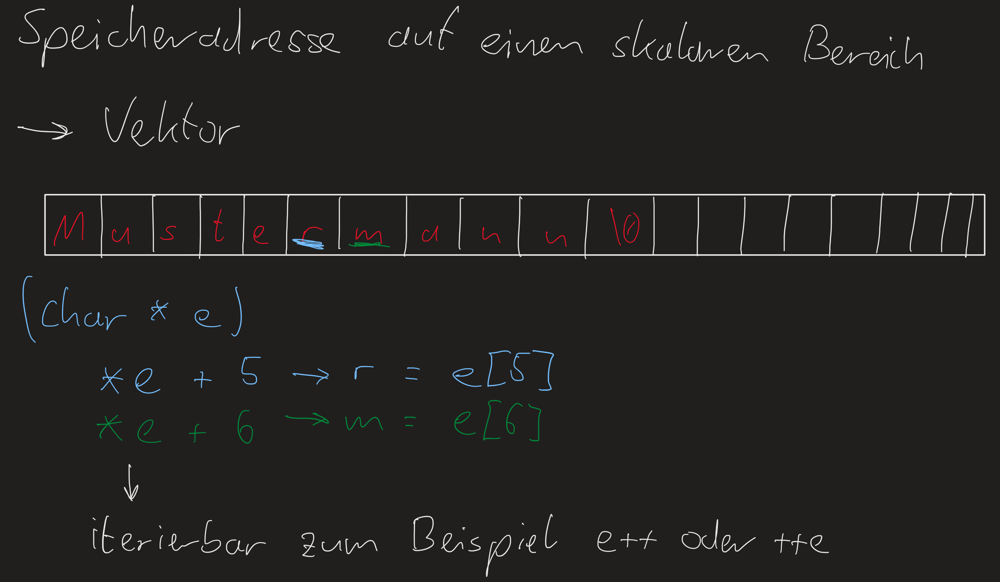
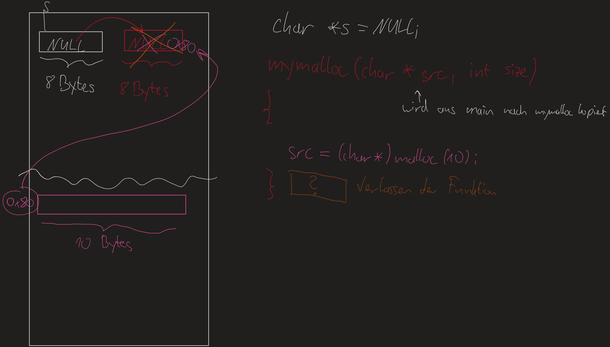
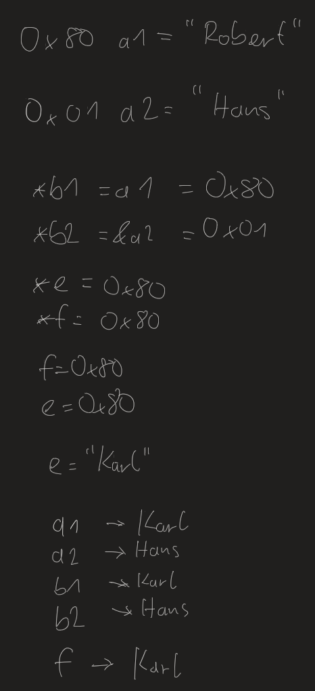
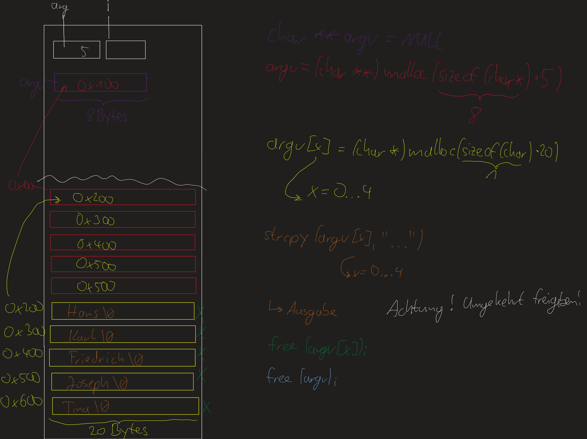

Vorlesung2 Montag 11. Oktober 2021¶
Intro Zeiger¶
int i = 5; -> Speicher in Strukturbreite von int (4 Byte) anlegen
int *iz = &i; -> zeigt auf gleichen Wert (Speicheradresse) wie i
#include<stdio.h>
int main(void)
{
int i = 5;
int *iz = &i;
printf("i ist %d und an Adresse %p\n",i,&i);
printf("iz ist %p und hat den Value %d\n",iz,*iz);
printf("Ändern von i\n");
i = 66;
printf("i ist %d und an Adresse %p\n",i,&i);
printf("iz ist %p und hat den Value %d\n",iz,*iz);
printf("Ändern von iz\n");
*iz = 77;
printf("i ist %d und an Adresse %p\n",i,&i);
printf("iz ist %p und hat den Value %d\n",iz,*iz);
return 0;
}
Zeichnung dazu
{kind=link}
Unterschied Call by Value und Call by Pointer
#include<stdio.h>
void CallByValue(int i)
{
i = i + 10;
}
void CallByPointer(int *i)
{
*i = *i + 10;
}
int main(void)
{
int ii = 4;
printf("1 ii ist jetzt %d\n",ii);
CallByValue(ii);
printf("2 ii ist jetzt %d\n",ii);
CallByPointer(&ii);
printf("3 ii ist jetzt %d\n",ii);
return 0;
}
Zeichnung dazu
{kind=link}
Man kann in C jederzeit Speicher allokieren und deallokieren!
#include<stdio.h>
#include<stdlib.h>
int main(void)
{
int *i = NULL;
/* Reservieren des dynamischen Speichers */
i = (int *)malloc(sizeof(int)*1);
*i = 100;
printf("i ist %d und befindet sich an Speicheradresse %p\n",*i,i);
/* Speicher freigeben*/
free(i);
i = NULL;
return 0;
}
/*
Ausgabe
i ist 100 und befindet sich an Speicheradresse 0x560a53b3b2a0
*/
{kind=link}
Allokieren von Speicher am Beispiel von String Vectors
#include<stdio.h> /*printf*/
#include<string.h> /*strcpy*/
#include<stdlib.h> /*malloc, free*/
int main(void)
{
char s1[100]; /*statisches alloc - Speicher adresse im statischen Bereich*/
char *s2 = NULL; /*Speichervariable*/
s2 = (char *)malloc(sizeof(char) * 100); /*dynamisches alloc*/
strcpy(s1, "Inhalt in s1");
strcpy(s2, "Inhalt in s2");
printf("s1 ist: %s\n",s1);
printf("s2 ist: %s\n",s2);
printf("Zeichen 1 von s1 ist %c\n",*s1); /*%c ist wieder Value und muss dereferenziert werden*/
printf("Zeichen 1 von s2 ist %c\n",*s2); /*%c ist wieder Value und muss dereferenziert werden*/
free(s2); /*dynamischen Speicher freigeben*/
s2 = NULL; /*Reservierungsvariable auf NULL setzen*/
/*s1 ist weiterhin vorhanden*/
return 0;
}
{kind=link}
Verschiedene Arten strings zu lesen
#include<stdio.h>
#include<string.h>
#include<stdlib.h>
int main(void)
{
char *s = (char *)malloc(sizeof(char)*20);
char *sc = s;
int i = 0;
strcpy(s, "Mustermann");
printf("s ist [%s], sc ist [%s]\n",s,sc);
for(i=0;i<20;i++)
{
printf("Zeichen %d ist %c\n",i,s[i]);
}
printf("----------------------------------------\n");
for(i=0;i<20;i++,sc++)
{
printf("Zeichen %d ist %c\n",i,*sc);
}
printf("s ist [%s], sc ist [%s]\n",s,sc);
free(s);
return 0;
}
Eigene Funktion zum Kopieren von strings¶
#include<stdio.h>
#include<stdlib.h>
char * mystrcpy(char * dest, char * source)
{
/*Methode Student*/
int i = 0;
for(i=0; source[i]!='\0'; i++)
{
dest[i] = source[i];
}
dest[i] = '\0';
}
char * mystrcpychrack(char * dest, char * source)
{
/*C++ Chrack*/
for(;*source!='\0';*dest=*source,dest++,source++);
*dest = '\0';
}
int main(void)
{
char *a1 = (char *)malloc(sizeof(char)*20);
mystrcpy(a1,"Mustermann1");
printf("Der Inhalt von a1 ist jetzt %s an Speicheradresse %p\n",a1,a1);
mystrcpychrack(a1,"Mustermann2");
printf("Der Inhalt von a1 ist jetzt %s an Speicheradresse %p\n",a1,a1);
free(a1);
a1 = NULL;
return 0;
}
{kind=link}
Wichtig bis hier:
{kind=link}
Eigene Implementierung der strcat Funktion:¶
#include<stdio.h>
include<stdlib.h>
char * mystrcpy(char * dest, char * source)
{
for(;*source!='\0';*dest=*source,dest++,source++)
*dest='\0';
return dest;
}
char * mystrcat(char * dest, char * source)
{
for(;*dest!='\0';dest++);
return mystrcpy(dest, source);
}
int main(void)
{
char *a1 = (char *)malloc(sizeof(char)*20);
mystrcpy(a1,"Mustermann, ");
printf("Der Inhalt von a1 ist jetzt %s an Speicheradresse %p\n",a1,a1);
mystrcat(a1,"Hans");
printf("Der Inhalt von a1 ist jetzt %s an Speicheradresse %p\n",a1,a1);
free(a1);
a1 = NULL; /*a1=0*/
return 0;
}
{kind=link}
Versuch Speicher dynamisch zu allokieren:
{kind=link}
Nonsense Code dazu:
#include<string.h>
#include<stdlib.h>
#include<stdio.h>
/* NONSENSE CODE */
void mymalloc(char * src, int size)
{
src = (char*)malloc(sizeof(char)*size);
}
int main(void)
{
char * s = NULL;
mymalloc(s, 20);
strcpy(s,"Mustermann");
printf("Ausgabe: %s\n",s);
free(s);
return 0;
}
Klausuraufgabe Was sind die Ausgaben?¶
#include<stdio.h>
#include<string.h>
#include<stdlib.h>
int main(void)
{
char *a1 = (char *)malloc(sizeof(char)*10);
strcpy(a1, "Robert");
char a2[] = "Hans";
char *b1 = a1;
char *b2 = &a2;
char *e = b1;
char *f = a1;
f = e;
e = f;
strcpy(e,"Karl");
printf("Ausagbe a1: %s\n",a1);
printf("Ausagbe a2: %s\n",a2);
printf("Ausagbe b1: %s\n",b1);
printf("Ausagbe b2: %s\n",b2);
printf("Ausagbe f: %s\n",f);
free(a1);
a1 = NULL;
b1 = NULL;
f = NULL;
e = NULL;
return 0;
}
Überlegung:
{kind=link}
Lösung:
a1 -> Karl
a2 -> Hans
b1 -> Karl
b2 -> Hans
f -> Karl
Zeiger auf Zeiger¶
Codebeispiel:
#include<stdio.h>
#include<stdlib.h>
#include<string.h>
/*
int main(int arg, char **argv)
{*/
/* arg = Anzahl der Argumente */
/* argv = Zeiger auf Zeiger der Argumente */
/*
int arg=5;
char **argv = NULL;
int i;
for(i=0; i<arg; i++)
{
printf("Argument %d ist %s\n", i, argv[i]);
}
return 0;
}
*/
int main(void)
{
int arg=5,i;
char **argv = NULL;
/*ERSTE EBENE*/
argv = (char **)malloc(sizeof(char *) * arg);
/*(8 * 5 = 40)*/
/*ZWEITE EBENE*/
argv[0] = (char *)malloc(sizeof(char)*20);
argv[1] = (char *)malloc(sizeof(char)*20);
argv[2] = (char *)malloc(sizeof(char)*20);
argv[3] = (char *)malloc(sizeof(char)*20);
argv[4] = (char *)malloc(sizeof(char)*20);
strcpy(argv[0], "Hans");
strcpy(argv[1], "Karl");
strcpy(argv[2], "Friedrich");
strcpy(argv[3], "Joseph");
strcpy(argv[4], "Tina");
for(i=0; i<arg; i++)
{
printf("Argument %d ist %s\n", i, argv[i]);
}
/*Freigeben zweite Ebene*/
for(i=0; i<arg; i++) free(argv[i]);
/*Freigeben erste Ebene*/
free(argv);
return 0;
}
Das ganze als Bild:
{kind=link}
Dynamisches Allokieren von Speicher:¶
#include<stdio.h>
#include<string.h>
#include<stdlib.h>
void mymallocstrcopy(char ** dst, char * src)
{
*dst = (char *)malloc(sizeof(char) * (strlen(src)+1));
strcpy(*dst,src);
}
int main(void)
{
char *s = NULL;
mymallocstrcopy(&s, "Mustermann");
printf("Unser s ist jetzt: %s\n",s);
free(s);
return 0;
}
{kind=link}
Aufgabe (Klausurrelevant):¶
String zerlegen mit strtok: username:vorname:nachname:geburtsjahr
Ausgabe: Username ist: username Nachname ist: nachname Vorname ist: vorname Geburtsjahr ist: geburtsjahr
#include<stdio.h>
#include<stdlib.h>
#include<string.h>
void printpuffer(char * s, int size)
{
int i;
for(i=0;i<size;i++)
{
printf("Zeichen an Stelle %d ist %c (%d)\n", i, s[i], (int)s[i]);
}
}
int main(void)
{
char * puffer = (char *)malloc(sizeof(char)*2048);
strcpy(puffer, "musterm:Hans:Mustermann:1999");
printf("Puffer ist: %s\n",puffer);
printpuffer(puffer,29);
char * temp;
temp = strtok(puffer,":");
printf("Username ist: %s\n",temp);
temp = strtok(NULL,":");
printf("Vorname ist: %s\n",temp);
temp = strtok(NULL,":");
printf("Nachname ist: %s\n",temp);
temp = strtok(NULL,":");
printf("Geburtsjahr ist: %s\n",temp);
/*Achtung strtok verädnert den Ausgangsstring*/
printf("Was ist mit unserem Puffer passiert: %s\n",puffer);
printpuffer(puffer,29);
return 0;
}